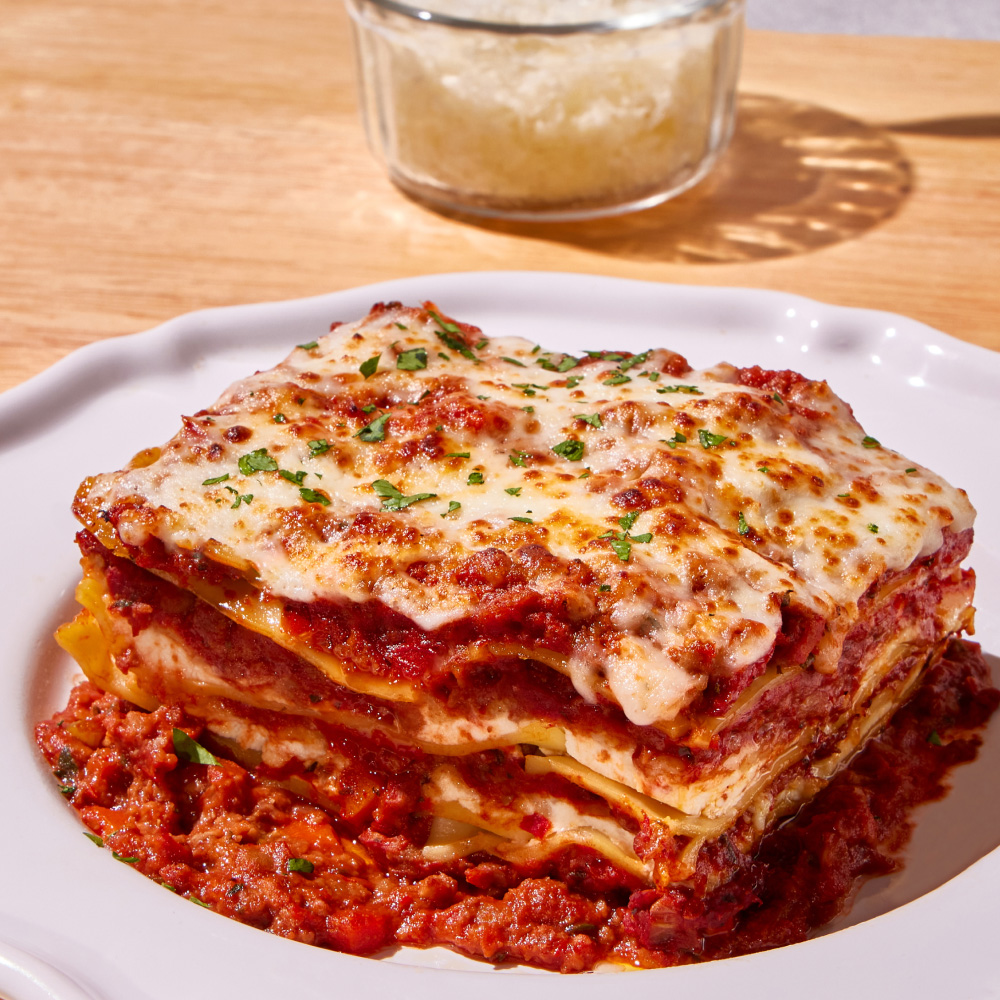

Lasagna

Description
Lasagna is a classic Italian dish featuring layers of pasta, rich meat
sauce, creamy béchamel, and melted cheese. This hearty, oven-baked
casserole is perfect for family dinners or special occasions, offering a
comforting and satisfying meal that can be easily adapted to different
dietary preferences.
Ingredients
-
For the Meat Sauce:
- 1 lb ground beef or sausage
- 1 onion, finely chopped
- 2 garlic cloves, minced
- 1 can (28 oz) crushed tomatoes
- 2 tablespoons tomato paste
- 1 can (15 oz) tomato sauce
- 2 teaspoons dried basil
- 1 teaspoon dried oregano
- Salt and pepper to taste
-
For the Ricotta Mixture:
- 15 oz ricotta cheese
- 1 egg
- 2 tablespoons chopped fresh parsley
- Salt and pepper to taste
-
For Assembly:
- 12 lasagna noodles
- 4 cups shredded mozzarella cheese
- 1 cup grated Parmesan cheese
Steps
-
Prepare the Meat Sauce:
-
In a large skillet, cook the ground beef or sausage over medium heat
until browned. Drain any excess fat.
-
Add the chopped onion and minced garlic to the skillet. Cook until
the onion is tender.
-
Stir in the crushed tomatoes, tomato paste, tomato sauce, basil,
oregano, salt, and pepper. Let the sauce simmer for about 30
minutes, stirring occasionally.
-
Prepare the Ricotta Mixture:
-
In a bowl, mix together the ricotta cheese, egg, chopped parsley,
salt, and pepper.
- Cook the Lasagna Noodles:
-
Cook the lasagna noodles according to the package instructions. Drain
and set aside.
-
Assemble the Lasagna:
- Preheat the oven to 375°F (190°C).
-
Spread a thin layer of meat sauce in the bottom of a 9x13 inch
baking dish.
- Place a layer of cooked lasagna noodles over the sauce.
- Spread a layer of the ricotta mixture over the noodles.
-
Sprinkle a layer of mozzarella and Parmesan cheese over the ricotta
mixture.
-
Repeat the layers (meat sauce, noodles, ricotta mixture, cheeses)
until all ingredients are used, ending with a layer of meat sauce
and a final topping of mozzarella and Parmesan cheese.
-
Bake:
- Cover the baking dish with aluminum foil.
- Bake in the preheated oven for 25 minutes.
-
Remove the foil and bake for an additional 25 minutes, or until the
cheese is melted and bubbly.
- Let the lasagna rest for about 10 minutes before serving.